来源：https://w91h2gmtrn.feishu.cn/docx/Ohe2dA2SyoHCcsxaz0CcbsZjnkc
读前说明：
1、本文13000字实践干货，是我耗时一年半，耗资100万做的一款约会APP的详细经验内容。并且内容公布了涉及到的产品、UI、运营、融资计划书（花的一万块做的PPT）等内部商业文档（免费分享给有缘人参考借鉴）。
2、内容篇幅较长，包含的图片也较多，强烈建议电脑浏览器阅读更加方便高效。
3、欢迎更多对技术引流、技术赚钱感兴趣的圈友，可以加我微信进一步深入交流：qiaobangzhu-cn
4、这套APP源码（iOS/Android、php后台）+数据低价出售，UI交互体验度高、APP前后端很多细节高质量功能，感兴趣的可以联系我！
5、乔帮主的AI实战训练营正在火爆招募中，全新的七大阶段的AI课程体系，手把手带大家玩转AI：
文章目录：
1、想法初衷
2、市场调研
3、需求整理
4、前期运营
5、公司成立
6、产品功能模块
7、UI界面设计
8、产品研发
9、测试阶段
10、引流技术研发
11、迭代新增功能
13、上架
14、上线及运营
15、融资计划书
16、亏钱成本清单
17、六大失败经验感悟
大家好，我是乔帮主。今天跟大家分享我做约会APP成功亏掉100万的经历，总结出来的技术赚钱踩坑经验希望对大家有所帮助和感悟。
作为一个技术者，永远都有个产品梦。想着做一款APP软件，或者软件系统，然后躺赚，再过上没羞没燥的快乐生活。
有梦想当然是好事，但当能力没办法支撑自己梦想时，认知没办法让自己清晰看到方向时，结局就是亏钱和走弯路。但当然，这失败的经验也是我们成功路上积累的财富。
我于2020年辞职出来创业，做的创业第一个项目：社交APP，耗费我一年半时间，并且成功亏掉自己100万。
本文详细梳理了我搞这款社交APP，从想法到需求整理到UI设计，再到开发、测试、上架及运营方面的实战经历，希望这段从入门到放弃的技术赚钱踩坑经验，能与君共勉！
并且本文公布了我做约会APP所有内部文档，包含运营方案、需求设计文档、产品设计文档、UI源图明细、融资计划书（让大家看看花一万块做的PPT长啥样）等，希望给到有缘人一些参考和帮助。
一直对社交类的软件很感兴趣，可能源于自己接触互联网的第一款软件就是QQ吧，那时候的互联网还很单纯、还很美好，存在着无限遐想和期待，我可以骑自行车一小时去镇上，就只为了登个QQ聊个天而已。
后来对社交类软件也是情有独钟，以前玩QQ漂流瓶都玩了几年，再到后来探探、陌陌、Soul 、各类婚恋交友软件、各类约会软件等，几乎app store中所有的社交软件我都用过、玩过、研究过。
如下图（我备用手机里面平时使用调研的一些同行约会软件）：
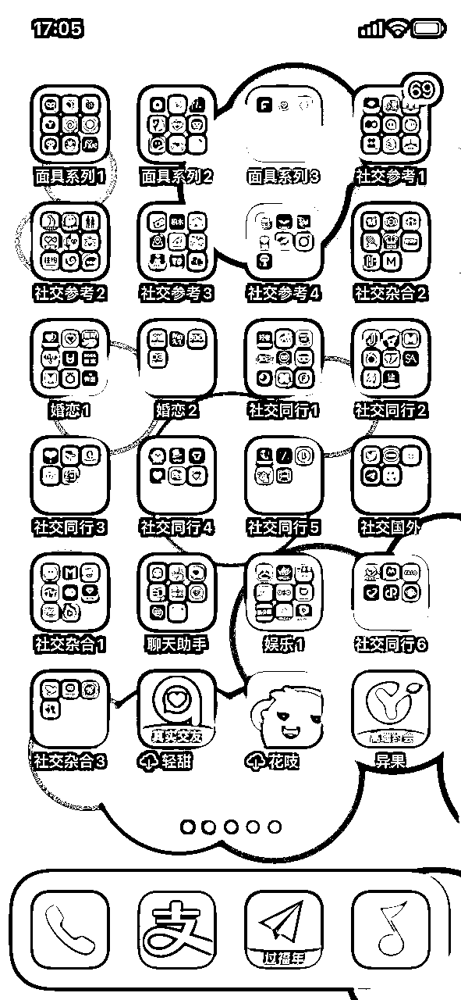
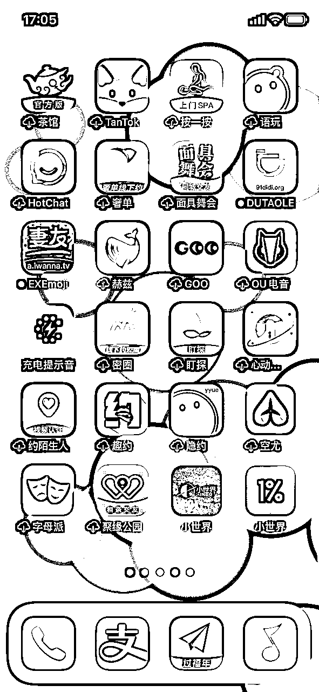
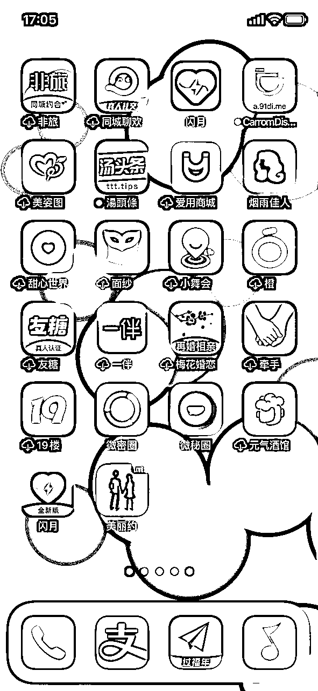
2019年那几年约会类软件的兴起，加上自己职业发展的考虑等。想出来单干，做一款感兴趣的，能一个月收益几十个W的赚钱约会类APP。
比如这款约会APP：
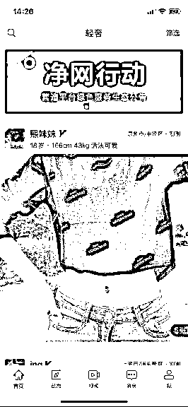
功能界面特别简单，会员月收入在50W左右。凭借自身在互联网技术领域多年经验，觉得做这类APP软件，在技术上对我而言就是小儿科，自身也有充足的自信。
总结：
从认知角度，觉得我能做成功吗？也许我这么问，大家找茬似的觉得有很多问题。但不知道能不能根据我的核心想法描述，发现可能出现哪方面较大的风险？可以先思考下，后文详细分享。
从2019年下半年的时候，我开始市场及需求调研可行性。市场及行业方面调研，我在“在行”APP上，约见请教了很多业内擅长做社交APP、擅长做运营的大佬，针对社交APP在产品、运营、创业、融资方面的问题做了深入请教。
@肖轶蕾 前阿里运营专家，14年互联网市场和运营经验
@周锦增 前Boss直聘 & 看准CEO助理
@陈露 NPLUS首席知识官，个人品牌与知识管理专家
@李翔昊 互联网公司产品总监
@田翔 社传咨询CEO，PPTV前总编辑
@季春宏 热知科技创始人，行仁文化创始人
@徐飞 旷谷资本合伙人
@何继倩 轻墨科技CEO，社交连续创业者
后来也跟@肖轶蕾 成为了好朋友，也经常聊及探讨APP这块推广运营的一些事情。
向这些专家请教，收获最大、印象最为深刻的三点：
另外在创业和运营方面给到我较多的经验，可能由于当初的执念及认知水平有限，就没能听进去吸收。总体来说，对做社交APP信心还是蛮足，以及接下来的规划考虑是：
总结：
可执行方案，本质上来讲，问题不大，但还是有很大优化空间。如果是你，你又会如何考虑规划呢？但主要的问题还是出在了后面，后文进一步分享说明。
在2020年1月-4月，那时候疫情开始，被封到湖北老家，那时候就开始筹划APP产品的需求。作为一个资深的社交产品使用的爱好者，对社交的产品使用、流程、套路等也算是非常熟悉。
我选择了市场中做的比较好的两个头部同行作为对标参考，一个是“面具公园”，另外一个是“春风十里”。
“面具公园”这款APP作为约会界的扛把子，甚至连我们公司的销售都知道这个APP。以前请客户娱乐都是去线下KTV、夜总会等，现在请客户娱乐变成到APP上找一个。
“面具公园”APP每天的会员收入在30万~50万之间，团队仅30~40人。当初上架推广，直接花了100万，在全国各个主要城市，以100元/位邀请了1万个高质量妹子，然后结合运营推广，让这款APP迅速掌握了市场。
但后来由于内部合伙人发展理念问题，加上这类APP擦边球等监管风险，APP从2020年10月对外公布停止运营，2021年1月样子就停服了。
“春风十里”作为面具公园同类产品，基于面具公园做了很多产品上的优化，整个产品的功能和UI上的优化蛮符合自己的想要的方向。
所以我基于“面具公园”和“春风十里”为产品对照原型，并在此基础上做了很多产品功能上的优化，也是自认为信心十足。定制的功能如下：
详细的需求文档如下（送给有缘人参考借鉴）：
总结：
在需求调研阶段，我就已经开始跟自己挖大坑了，产品需求方向上的问题，这也是导致自己失败亏钱的主要原因。大家可以想下，按照我现在的需求调研，会不会有问题，如果是你，你又会怎么做呢？明细后文会进一步分享阐述。
在2020年6月，确定了APP的前期整体运营执行方案，方案内容主要分为前期两个阶段的内容：
第一阶段：技术支撑
第二阶段：内容运营品牌曝光渠道搭建准备
详细的品牌方案文档明细（送给有缘人参考借鉴）：
值得注意的是，Logo设计用的主色系很重要，直接决定了后面产品UI界面的主色系，品牌宣传海报色系基调等。由于做的约会类，所以色系要能刺激欲望的暖色系为宜。结合品牌名“异果-遇见你的开心果”，最终敲定logo用橙黄色系。
其实早在2019年12月的时候，就确定了线下的一个运营外包团队。当时考虑运营外包的核心原因，一是想去找个社交运营方面的合伙人不太容易，另外一方面，主要想找个有社交APP这方面运营经验，来弥补我自己在运营方面经验不足的问题。
正好这个运营外包公司的老板，融资了一千万，也是专门在搞同类型的约会软件，感觉这块经验和资源能赋能我们APP上，所以果断就确定了合作。当初2019年12月给的整体运营方案内容，包含了2020年6月这前期运营执行方案的内容，但刚开始并不知道这个运营团队的水平如何，及是否合作愉快。
所以把合作分为了前期和后期，前期合作两阶段的运营内容，如果合作顺利，后期再合作额外的基础服务、网络推广/线上营销、产品运营这三阶段的运营内容：
第三阶段：基础服务
第四阶段：网络推广/线上营销
第五阶段：产品运营
详细的运营方案文档明细（送给有缘人参考借鉴）：
总结：
《社交APP整体运营方案2019-12》很全面是个系统专业性的运营方案，但我拿到这个方案的时候，总感觉在核心上缺点什么，但具体是什么，我也没办法具体给出，后文经验总结中会详细给出。
另外前期运营在很多事情没必要去弄，很多地方都在花冤枉钱，但这个入门的智商税貌似也是不得不出。
2020年7月，我辞职出来开始全职开始做APP。根据品牌名策划，公司名策划结果，首先对应的成立公司。当初我还在上海，主要成立了一家网络科技的公司。上海的公司注册都很方便，找黄牛2000块搞定代理记账的话，找个第三方的财务外包公司帮忙打理，一年的成本也就在3000左右。
值得注意的是，中小型企业，一般公司都只单独运营一个品牌产品。品牌名和公司名都设计成为一致了比较有益宣传。另外成立公司的主要核心目的是为了：
公司注册后，申请ICP增值电信许可证这块，办证费、代理费、还要公司3人以上交社保的费用等，即花钱又耗费时间。
2020年8月-9月，我辞职出来开始全职做APP。并在猪八戒上找了个开发外包团队（之前的运营外包也是在猪八戒上找的），对外包团队选择，我的要求主要核心3点如下：
外包公司根据我梳理出来的 ，估算出项目开发的大概人天，再对应给出商务报价最终敲定了合作（具体的费用支出（亏钱）清单，后文单独小节汇总）。
然后接着正式进入了APP项目开发流程，产品经理首先根据我整理的《社交APP证书需求说明书》，梳理成为具体开发的功能模块，这个功能模块主要目的是为了：
产品经理整理的详细的功能模块文档明细（送给有缘人参考借鉴）：
2020年10月，产品经理根据敲定的产品功能模板，让设计师进入UI设计阶段，让这些产品的功能模块在UI上直接体现串联起来。UI是我们这类赚钱变现APP，最能直观刺激用户消费的。哪怕功能开发差一点，也要UI设计的漂亮点。
UI设计师设计了两周，给我看了下初稿，结果与自己预期相差甚远，最开始初版效果图（以核心功能首页效果为例）如下：
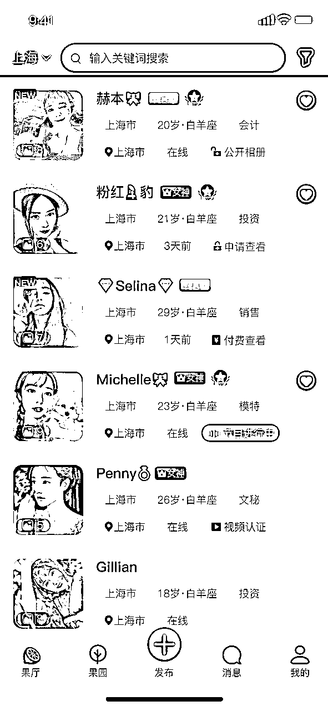
不知道大家能不能看出什么问题？主要的核心问题我汇总如下：
当时那个开发外包的公司在山东临沂，于是我紧急坐飞机从上海飞往临沂，直接在外包公司驻场了一个月。期间我还请了个UI设计的外援（认识的朋友）作为远程指导，在外包公司现场直接担任产品经理角色，直接跟UI设计师手把手的扣细节对接，我主要做了产品经理把控的工作内容（参考对标产品“面具公园”和“春风十里”）：
最终首页UI效果图如下（以首页和个人资料页核心展示页）：
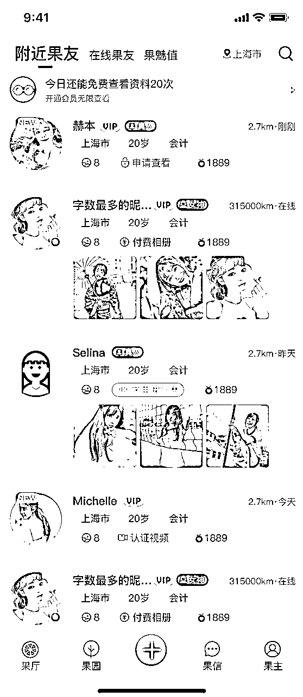
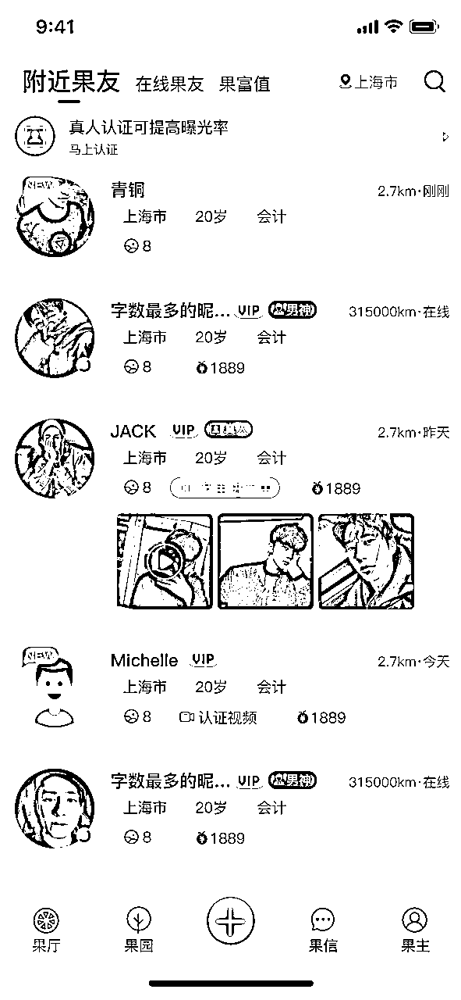
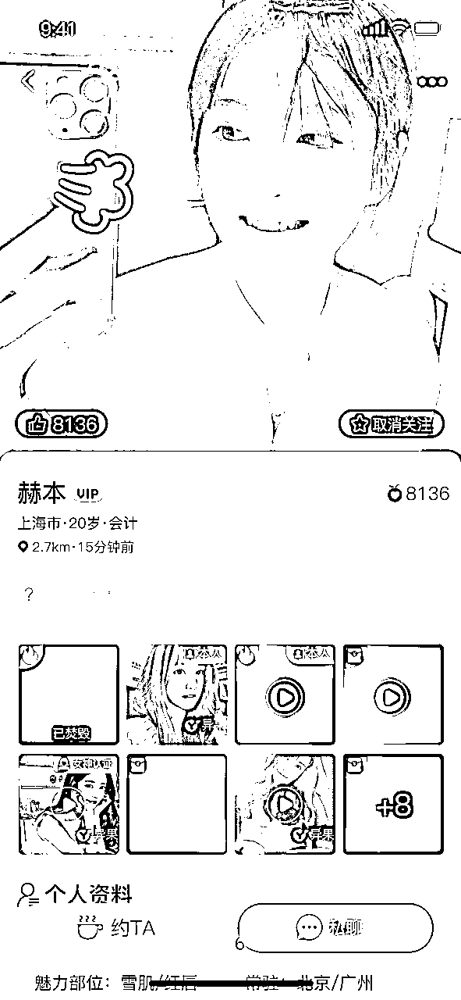
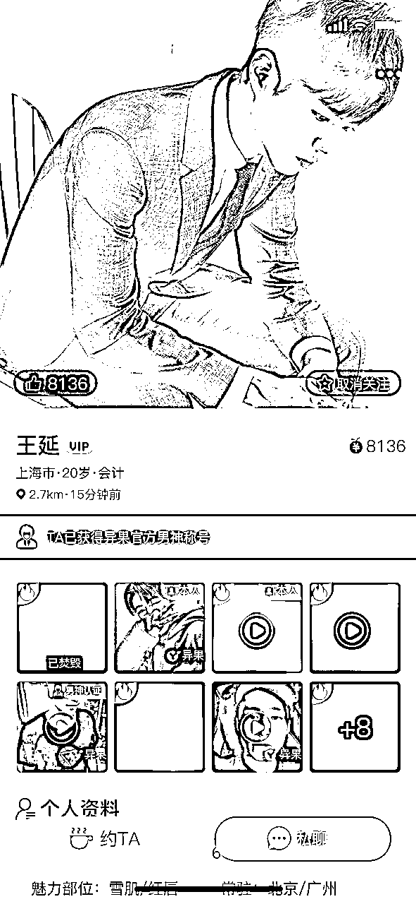
在UI设计阶段，我这边开始投入了大量的精力来设计，写了13个UI修改ppt（总共300页UI修改细节），20个UI修改word文档（跟产品经理和设计师的修改正式开会至少对接20次以上），最终设计出了222个功能页面。相比一般社交APP，产品功能页面多了50%（面具公园和春风十里的功能页面还是蛮多的）。
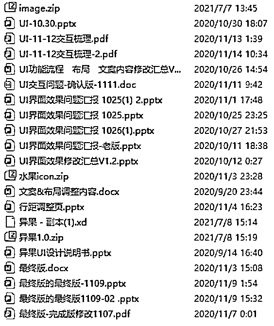
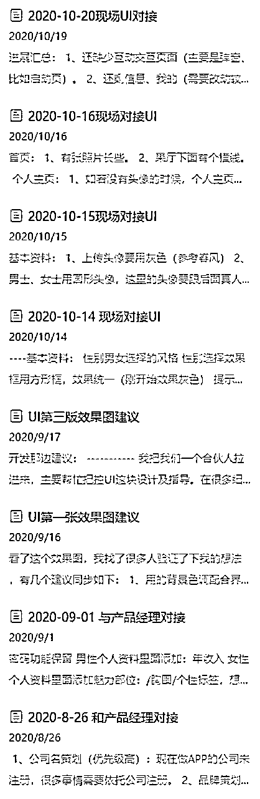
另外，UI设计阶段，外包公司根据项目估算，UI需要投入的人工成本是15人天。我拉着UI详细设计改了一个半月，超过的一个月单独进行了商务成本结算（具体的成本费用后面表格统计汇总）。
UI设计说明书文档明细（送给有缘人参考借鉴）：
总结：
在UI设计上开始大量投入精力的时候，这时候虽然我有些担心，但盲目的自信和对整个事情的经验认知不足，注定就走向了产品研发的一条不归路。
2020年12月-2021年2月，进入产品开发阶段，总共投入2名Android前端、2名iOS前端、2名php后端开发。
前端开发，主要根据UI界面设计，将静态的UI效果图，编码成对应的功能APP程序。
后端开发，主要根据产品功能模块，完成数据库设计、后端api接口，提供给前端APP程序调用。
产品开发阶段，经过整整三个月，这期间主要由外包公司的产品经理盯着进展。
我主要核心确认一些产品功能模块的逻辑流程：
以及后台定制的安全模块功能逻辑：
后台安全审查系统本质是一个安全监控预警系统，主要用于运营管理中过滤虚假用户、异常非法操作用户等。实现原理采用定时器采集用户端行为数据，或统计分析用户端行为数据，并对结果做检测。如若触发阈值，则对应的执行用户通知或封禁操作。
后台安全审查系统主要分为两个部分，第一个部分，用户异常行为检测（异步检测），主要分三大模块：用户异常行为数据采集模块、阈值设置模块、执行操作模块；第二个部分，注册与登录（同步检测）。
产品功能逻辑及后台安全系统文档明细（送给有缘人参考借鉴）：
2021年3月，外包公司初步完成了核心功能的开发，并进行了交付，主要对前端APP和后端管理系统做了交付。研发期间用的测试环境，交付的时候就单独部署了生产环境，部署主要部署的是后端应用，需要的部署环境资源如下（主要部署在阿里云上）：
大多数社交APP前端功能流程，大家用过社交APP的都应该见过长啥样。但具体社交APP的后端的管理系统里面有啥功能，我还没真没见过，其实也是充满了好奇。后台的功能主要用于对APP的管理和运营、以及系统参数的配置等。部署完后的后台功能截图如下。
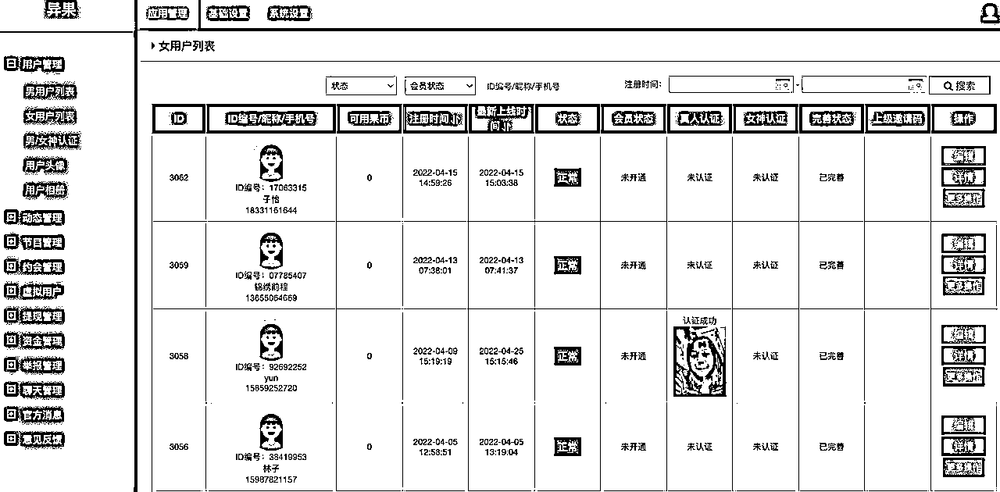
对于交付的版本，bug实在太多。然后接下来改bug都改了三个多月，我写了四十多个ppt，合计有一千多页ppt汇总bug。
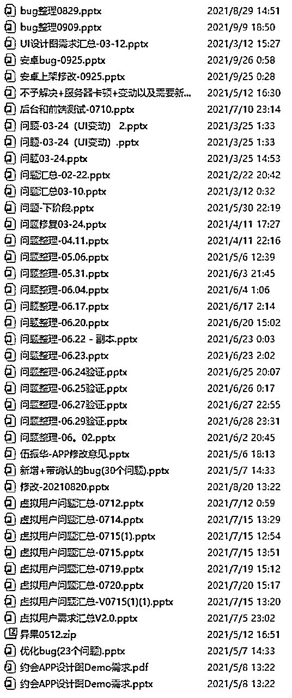
在后面改了几版后，虽然经过测试的确认，但交付给我的版本，还是在很多功能流程上明显存在一些bug。当时我充当测试、每天都熬夜的去一个个确认功能细节，付出了巨大精力在测试上。
反复的改，反复的出问题，让我觉得研发和测试根本对这项目完全没上心，当时直接上火，毁灭吧，我累了，直接对产品经理直接破口大骂：你们开发和测试都是吃屎的。
主要Bug问题：
后经过长达4个月反复修改，在2021年6月底，交付了最终的确认版。
总结：
Bug的修复，版本的迭代，感觉是一个不见天日+无限死循环的路。特别是前面自作多情定制的一些功能，导致产品研发变复杂，后面不停的测试和修改，耐心和精力也几乎被项目耗尽。
在前面说过，做这款APP自己信心很足，有个很重要的原因，就是打算用擅长的引流技术（压箱底的技术）。避开自身在运营、渠道资源方面的不足，通过技术来建立壁垒。
在早些年2010年我还在读大学的时候，我在CSDN写过一篇《黑客安全与Java Web》，虽然这篇文章针对的是网站Web类应用。但整体来说，技术层面底层逻辑原理都是一样，本质跟赚钱的底层商业逻辑一样的道理一样。
所以，在我看来，任何APP的客户端都是存在很多安全漏洞。特别一些中小型企业，由于技术团队能力薄弱，或者找的外包开发的，在安全方面的问题很隐患很大。
所以我的这个压箱底技术就是逆向截流，但由于技术的敏感性，就不再过多介绍。在2021年6月-2021年11月期间，进行了技术MVP测试，跑通市面上五款头部约会APP，搞定100万男用户流量，40万女用户流量。
以下为这五个约会APP的运营数据参考（取自商业计划书中重要商业内容，后文直接把APP商业计划书开放给有缘人参考借鉴）：
可以看出来它们会员费收入是几百万到千万不等，跑通MVP在技术可行性上得到验证，加上看到这个收入的数据，我瞬间上头，觉得自己又行了。
总结：
做引流技术，本质跟开发一样，也是需要成本的，而且这成本比一般项目研发要贵很多。虽然我在技术方向、技术思路，技术怎么搞上能把控，但最终需要找一些有经验做安全的去落地，去调试、去编码落地等。
跑通5个同行头部约会APP的测试，这块已经耗费较多费用了（具体成本费用后面单独一个小节汇总），如果后期批量使用及涉及维护的问题，研发成本会更大。
在前期市场调研的时候，就考虑过女用户这块的核心资源，除了用壁垒技术解决。打算用虚拟用户 + 人工智能技术，进一步巩固。
我对市面上人工智能技术做了深入调研，打算把机器人用到APP里面，来实现智能化模拟真人来聊天，达到引流和转化的目的。
对国内几家做聊天机器人的公司做了深入技术调研，发现这项技术当前在国内仅在智能客户场景上。只能被动式的聊天（客户问，然后机器人回答），并不能做到主动式聊天，并且聊天内容的上下文关联、业务场景定制化等方面也存在较大技术问题。所以最终放弃，打算主要弄下虚拟用户功能。
2021年7月，开始准备APP上线及运营的准备。APP前期由于用户少，种子用户和冷启动打算用虚拟用户解决。前期平台没有用户，主要用虚拟用户充当真实的用户。一方面来活跃平台，跟平台带来活力。
另外一方面，也是为了促进用户交易，让用户充值会员买单等。女性用户作为社交APP的核心资源，所以虚拟用户的录入肯定是录入女性用户，男性用户就没有多大的录入必要了。
在后台有个专门管理虚拟用户的功能模块，在前端APP上看到这些用户都是真实注册的用户没啥两样，都是正常的上下线、正常的距离位置。
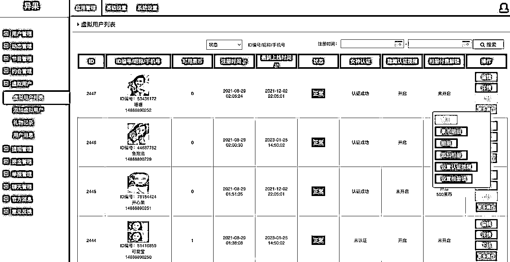
这些虚拟用户能正常回复你信息，其实都是后台控制直接回复，都不是真正的用户回复。
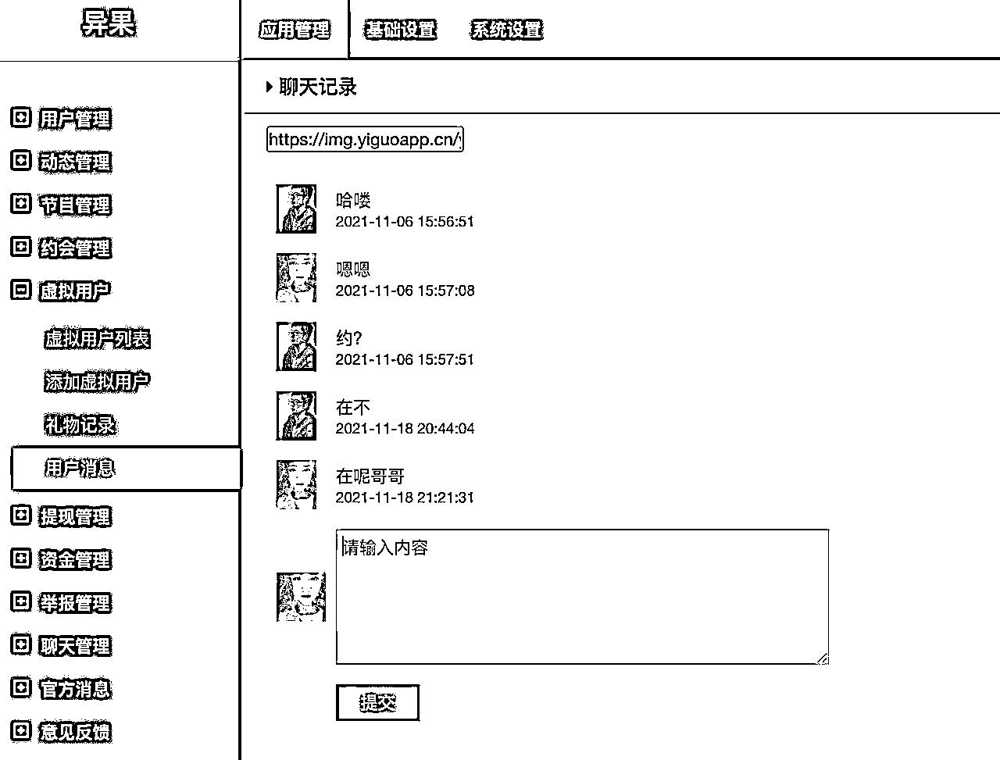
也能在后台控制这些虚拟用户对你自动打招呼，这些打招呼语的内容都是提前准备录制好的，打招呼的频率等都能通过参数控制。
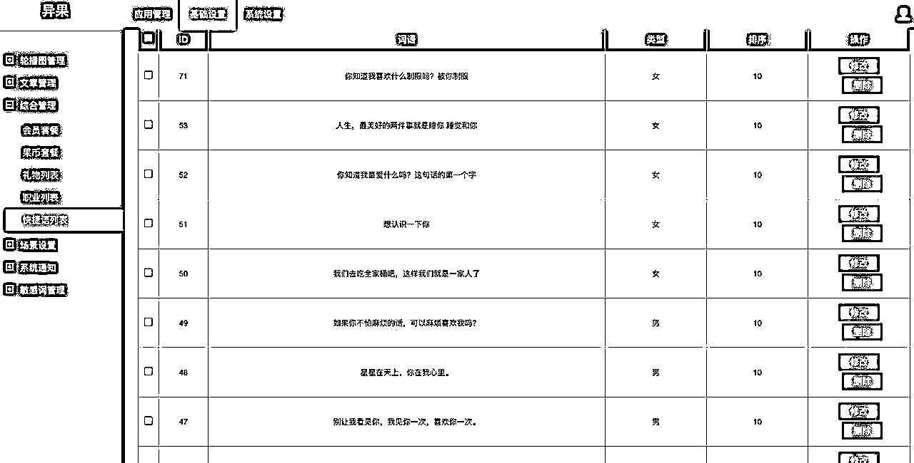
到这里可能很多人会问，虚拟用户为什么不用爬虫技术，去其他平台爬取自动录入？而是在后台单独做了个功能模块，需要人工录入，费时费力的。
主要原因是通过人工添加，在录入的资料上的一些细节上能控制逼真。如果用爬虫的话，为了达到逼真效果，可能写这个爬虫代码成本也太高了。
为了保障录入的用户跟真实的用户没差别，主要核心做了以下控制：
相关效果APP截图如下：
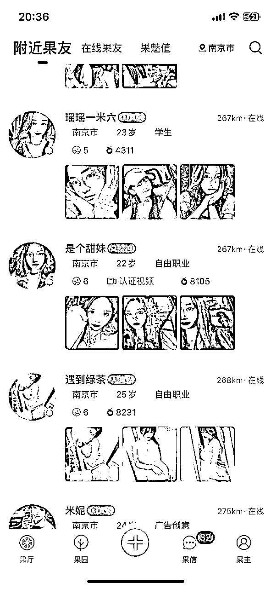
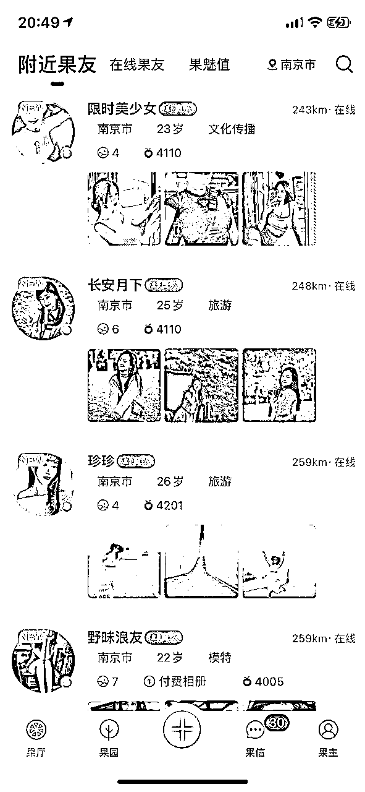
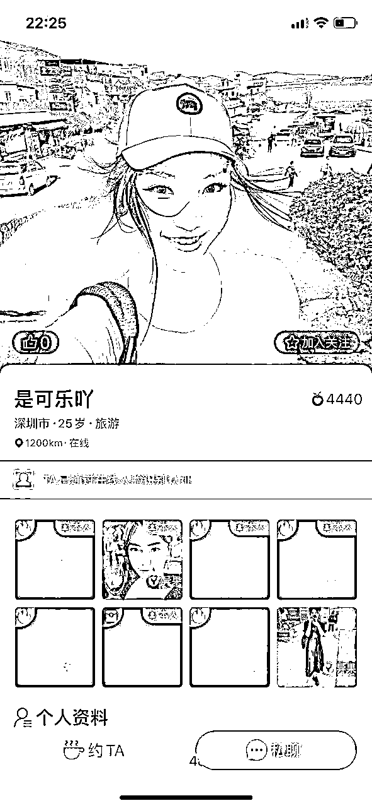
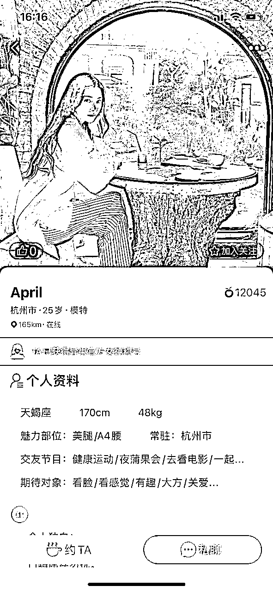
虚拟用户文案文档明细（送给有缘人参考借鉴）：
总结：
虚拟用户的功能模块，额外开发了两周，算是新增功能，这块向外包公司开发额外支付了开发费用。另外在虚拟用户照片的收集、用户资料文案设计、虚拟用户的录入等，也是额外花了一个月时间去整理。
2021年9月，开始准备上架。先开始弄的iOS上架，iOS在APP流量中应该占据了半壁江山。
APP的上架核心三点：
我们APP的预览宣传图（色系风格都是跟品牌logo色系基调一直）：
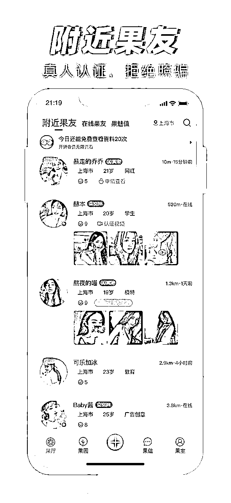
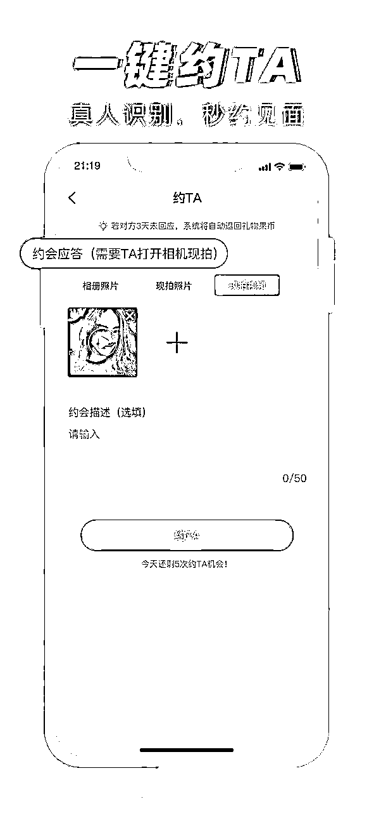
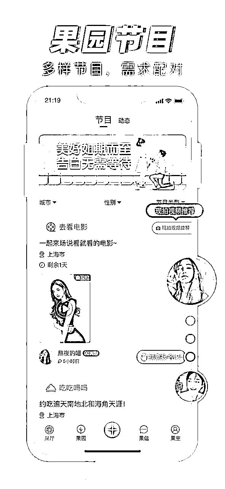
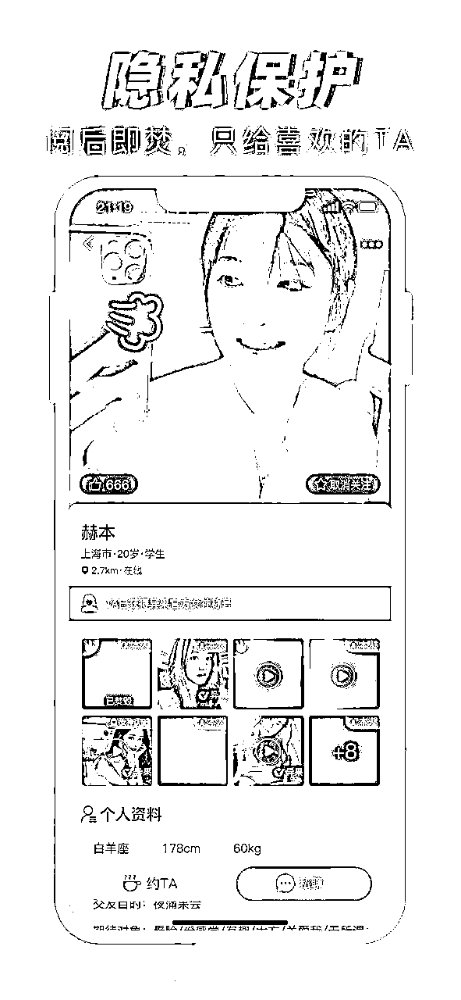
APP上架代理费，代码修改都是额外的成本费用，并不包含在外包公司的项目研发费里面。经过一个月的反复修改，提交了10个以上的版本审核，都被苹果审核不通过，相应被拒的问题汇总如下：
大部分问题都改了，最后卡在审核的4.3，说我们APP的约会功能复制了App Store上当前可用的许多其他类似应用程序的内容和功能。所以如果要过审核，可能要在UI及功能代码上做较大的调整了。
另外也对安卓进行了上架，主要上架安卓的常用的几个应用商店：华为、小米、oppo、vivo、360、百度、应用宝、阿里、联想。安卓代码前期改完一版后，被拒的问题，跟iOS的问题差不多，也是需要大动代码，甚至还需要改logo图标。
iOS和Android上架被拒，这些后期大量的改动，导致研发成本可能就不可控。前后思量很久，最终打算放弃上架了。
总结：
外包在前期开发的时候，在UI设计、功能设计、代码编写等方面，以尽可能快的完成项目交付，完全没有考虑将来要上架的问题。导致我们上架的时候问题不断，很多UI设计、功能设计、底层代码都需要返工，最终由于时间成本和资金成本，不得不放弃上架。
2021年11月，跳过上架，直接上线开始对外推广运营。Android能直接下载使用，和应用商店里面下载的没啥不一样。iOS在淘宝上找了企业签证的，封装到安装中供给用户下载使用。
和应用商店里面能直接下载使用不同的是，使用iOS签证安装的程序不能直接打开使用，需要在设置里面信任通过证书，才能正常使用。使用企业签证让用户多操作一步，但这也是没办法上架应用中的比较常见办法。
除了企业签证的办法外，也可以用testflight方式，不过这都是没办法上架APP Store中其他常用办法（跟安卓系统不一样，要不然都没办法在iOS系统中打开）。
安装包准备好，使用openinstall包分发集成。然后结合前面收集虚拟用户的时候，收集到的美女图，制作宣传海报，刺激男用户来充值消费（这类APP都是女用户免费，男用户收费，即女用户就是平台的商品，而男用户就是消费品，本质跟电商模式一模一样）。
相应宣传海报效果如下（下载链接早已失效，主要看看效果图效果）：
运营方面专门找了个全职的人员，来做后台用户管理、日常运营、客服等。推广这块，国内正经的推广渠道，和国外非正经渠道都有找过（在telegram上还被飘过，也都是在交认知学费吧）。
但国内正经的付费信息流渠道，一般都要求要上架应用商店（基本的安全规则，要求高点的还要求企业有其他比如ICP增值电信许可证），由于APP上架失败，导致正规信息流渠道也走不了。
所以我最终把希望寄托在之前说到的压箱底技术“9、引流技术研发”，但往往太看重某个事情，往往结果事与愿违。我群发了六千男用户，和六千女用户，只跟平台带来200男用户和400女用户注册量，仅有8人充值会员，4人充值金币。
所谓压箱底技术，最终这注册转换和充值产出，有点让自己心凉。可能后面改变引流文案和运营手段，再结合引流技术会好很多。但引流技术本身后面的维护要产生巨大成本（更新脚本、更新算法、不停的调试等），完全入不敷出，所以最终看来，所谓压箱底技术并不能带来美梦了。
研发+测试的远低预期，加上后期无止境迭代的成本问题，加上iOS和Android上架不成功的问题，加上引以为傲的引流技术效果不尽人意，让我开始萌生退意。
但本质问题还是钱（成本）问题，如果我能搞定融资，结合专业的技术团队和运营团队，通过我的技术，还是有很大机会。想到这一点，我突然感觉我又行了。
2021年12月，开始写融资计划书。为了方便融资，想着找个专业机构来帮忙推荐融资渠道，同时在融资计划书上给些专业指导。
也是同样在猪八戒上找了个各项评分都靠前的融资服务公司帮忙策划及写PPT，最终选择了一家负责人之前做过融资经理的策划公司，一方面比较看重那边手里的资源渠道，另外一方面希望在策划方面给出专业指导。
最终花了10800，写了个PPT，而且Word版的内容本质也都是PPT的内容，只不过换成Word格式了。
融资计划书文档明细（送给有缘人参考借鉴）：
而且PPT的内容也都是我全部写好直接提供的，策划公司也没帮忙策划什么新的内容，核心帮忙美化设计了下PPT的样式而已。看中的融资渠道，交付的时候也就只给了一个《投资机构内部通讯名单》（个人信息敏感文件，不方便直接放出来了，有缘人需要的话单独找我索取），剩下的也就自己去主动联系。
2023年1月，把写好的PPT给到自己手里一些投资人，和外面自己找的一些投资人聊了聊。所信心的压箱底技术，在投资人面前就有点投机取巧，关键这技术比较敏感（法律风险较高），我所认识一个投资人也一针见血的说只适合自己独自搞搞。
最终融资想法吃瘪，彻底放弃了APP项目的继续。本身APP从开发到虚拟用户功能迭代，花了大力气才把APP整到上线状态，APP整体界面、功能、细节方面其实我还是蛮满意，比市面上同类型约会APP质量要强很多。
但由于对APP整体规划认知不足，导致后期维护成本、迭代成本、后期运营等很多问题上的能力跟不上，导致最终无奈不得不妥协放弃。
我朋友也多次劝我及时止损，但执念和不甘心未能让自己及时止损。所谓从入门到放弃，还是自己太年轻。不过从另外方面来讲，这也是我在创业道路上的很好经验累积，磨练自己的能力。
特别让自己在对APP开发整体认知，对UI设计（框架布局、色系搭配、图标设计）、对上架、对运营、对融资等方面有较大成长，毕竟这100万的学费，逼着自己也要学会了。
接下来对整个项目的成本开销，和经验做个最终总结汇总。
| 类别 | 事项 | 费用 | 备注 |
|---|---|---|---|
| 公司注册 | 2000 | ||
| 代理记账 | 3000 | 每年 | |
| 社保/公积金 | 6000*2=12000 | 3个人的社保+公积金两个月，办理ICP增值电信许可证需要。 | |
| 策划服务 | 6000 | ||
| 官网建设 | 8600 | 包含域名、服务器、网站开发、框架设计、文案、图片设计、优化等全套内容； | |
| APP品牌包装 | 4500 | 品牌logo、品牌名、品牌口号、商标注册 | |
| ICP增值电信许可证 | 16000 | 增值电信许可证申请 | |
| 网站SEO优化 | 22600 | 关键词优化 | |
| 微信公众号-前期搭建准备 | 900+3800=4700 | 自定义菜单栏搭建、文章撰写推送 | |
| 自媒体矩阵-前期搭建准备 | 2000 | 账号的注册搭建及认证等 | |
| APP开发 | 280000 | 包含需求整理，UI设计，研发和测试 | |
| UI额外开发 | 50000 | 拉着外包UI优化设计额外工作一个月的成本费 | |
| UI外援指导 | 10000 | 额外找的UI指导成本费 | |
| 上线环境搭建 | 20000 | 阿里云服务器、OSS、域名、鉴黄服务等 | |
| 第三方聊天模块 | 50000 | 用的环信聊天模块和语音模块，包月充值 | |
| 第三方短信网关 | 5000 | 主要用于验证码登录 | |
| 第三方一键登录 | 5000 | 主要用于登录时候的一键登录 | |
| 虚拟功能开发 | 30000 | 二次迭代开发 | |
| iOS上架 | 30000 | 包含上架代理费和开发费 | |
| Android上架 | 5600+5000=10600 | 上架费和代码修改费 | |
| 引流技术 | 200000 | 引流技术的开发和维护费（跑通5个头部同行约会APP） | |
| iOS企业签证 | 3000 | 用了一个月 | |
| 包分发 | 2000 | 用的openinstall做包分发 | |
| 融资计划书 | 10800 | PPT版本+Word版策划 | |
| 合计 | 757,800元 | 硬性成本开销，还没包含这一年期间我自身劳动的人力成本费用，以及出差差率费等杂七杂八成本费用，合计至少超百万。 |
1）程序员赚钱最大的认知问题：总想做个产品
做技术出身的一个很大问题，就是往往只是站在技术角度思考问题，上来就想做个APP，想做个软件，想做个产品等。没有站在商业角度、没有站在营销角度的思考，这些仅在技术角度yy出来的想法，距离赚钱太遥远，终归是猴子捞月。
我们要做的是距离赚钱最近的事情，而不是距离技术最近的事情。而有技术，产品也并不是唯一赚钱路径，太多时候都只是自己看太少、看太少、还是看太少。
2）成功的关键不是取决于你看到的，而是取决于你看不到的风险
做技术的，总是容易受到自身技术眼界限制，觉得一个APP这么简单，觉得自己也行，也能同样能做出来，甚至能做的更好，能赚更多钱等。
你所看不到的是，上架运营问题，资源渠道问题，后期维护迭代问题等等。而这些才是决定你是否能成功的核心因素，而不仅仅只是你看到的技术问题。
3）创新的基础是要先学会复制，不要还没学会走路，就要想着去奔跑
刚开始产品功能设计的时候，就想着去优化、去微调、去优化，这是导致项目难产失败的重要原因之一。一款在应用商店成熟的产品，在功能上必然经过产品、研发、上架、市场等每个环节打磨和验证，也是环环相扣的结果。贸然去改变其中一个功能，就可能额外导致很多试错成本增加和多走很多弯路。
就拿我在APP前期产品功能设计过程中，自以为是的上去优化，最终导致研发技术难度增高，测试难度增大，足足延期了近半年。而且这些功能的改变，直接影响后面的上架的成败，甚至后面也没机会经历市场检验了。
所以我们首要学会的是先走路，再想着如何去奔跑。先一模一样的去复制模仿，快速获得项目上的认知跟检验。稳定及小有所成后，可以再根据团队、资金等实际情况，进行一些差异化的调整，再将自己的优势注入业务中。毕竟好的产品功能是优化迭代而来，而不是单纯靠yy想出来的。
4）复制最好的做法是购买成熟产品源码直接上线，减少前期在研发方面的成本投入，快速验证
既然复制是产品核心基础，那复制的最好做法就是直接去买同行成熟的产品源码改改直接上线。可能功能没办法定制化，但这绝对是去MVP验证最好的方式。
后来我在市场上也找到了“面具公园”技术团队，源码直接卖50万，面具公园整个产品经历过市场很好考验，用户使用的体验和质量都蛮好。所以在前端，特别在后端这款产品也算是非常成熟。就是价格有点贵，不过自己去招人去迭代优化成为类似“面具公园”的这成品的产品，所花费的费用和时间，要远远超过50万了。
然后又专门接触过一个专门做婚恋APP、社交APP、约会APP的小开发团队，这块成熟产品报价也就2-3万。如果我前期直接用这成熟的代码部署，在资金、时间上都能节省不少。
5）对运营的不懂，本质还是对业务的不懂，代运营就是在交智商税
想做约会APP的时候，那时候对这类APP运营其实没啥概念，我还专门把市面上APP运营的书籍买了很多、也在“在行”上找到运营专家来请教这方面问题，但还只是了解了点表面皮毛。
后来找代运营公司，想弥补这方面不足，给我的运营方案看来也没啥问题，整体运营方案感觉整的也很专业，但那时候我总感觉缺少点啥。
后来经历过后面的开发，测试，上架，引流，及运营等，让我深刻理解约会APP的业务特点。之类快速变现赚钱APP，在产品方面是其次，核心在于资源渠道。特别是核心的女性用户从哪里来？这好比一个电商平台上的商品，如果连商品都没有，那谈何充值交易等。
所以整体运营方案就不能按照传统产品的方式来运营，而是要侧重资源渠道，及一些针对性的信息流渠道投放。所以前期的运营方案，90%的内容都是没必要的：
所以代运营在运营中也就帮你做了些体力活来谋求他们利益，在核心的资源渠道业务问题上，根本是没用到。这些体力活也不复杂，我们完全也能自己做，还能节省不少钱。但这个智商税也是必须得交的，算是入门的学费吧。
6）外包不适合产品开发，适合工具类开发
软件外包、运营外包，本质是一个人力外包服务，适合做确定的一些事情，而不适合做频繁迭代优化的事情。
外包并不能站在产品角度为你真正去考虑问题，只站在项目角度，只考虑项目交付。所以在产品的质量、性能、安全、上架、运营等很多问题上都不会跟你去考虑。
而一个成熟的产品，又要经常去优化去迭代，而外包又涉及跨团队，改进速度、改进质量、改进成本上都不能保障。所以外包不适合做需要频繁迭代的产品开发，更加适合需求、功能简单且确认的工具类开发。
备注：这套APP源码（iOS/Android、php后台）+数据低价出售，UI交互体验度高、APP前后端很多细节高质量功能，感兴趣的可以联系我！
乔帮主的AI实战训练营正在火爆招募中，全新的七大阶段的AI课程体系，手把手带大家玩转AI：
往期干货精选：
往期干货合集：
微信：qiaobangzhu-cn，欢迎交流！
公众号：乔帮主的AI江湖